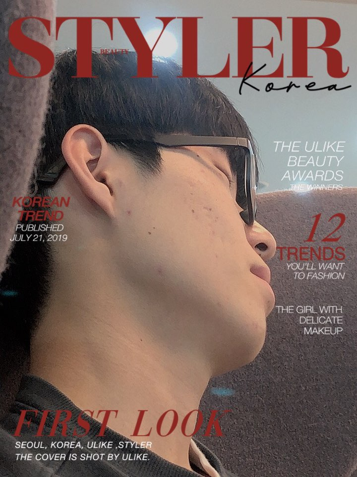
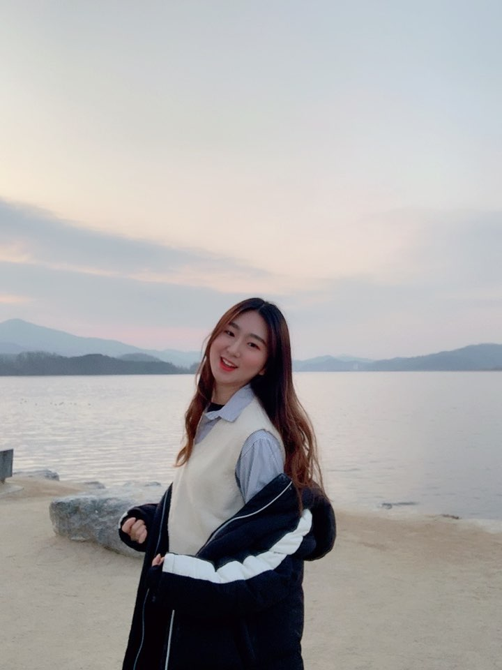
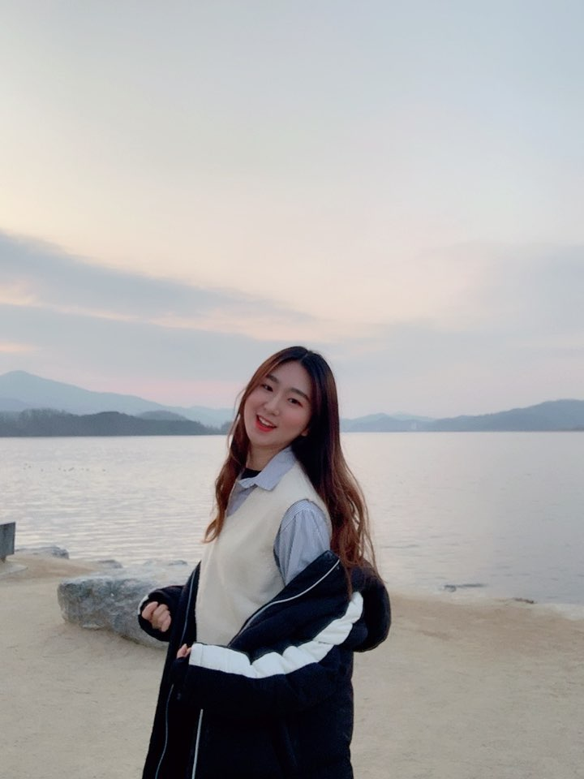
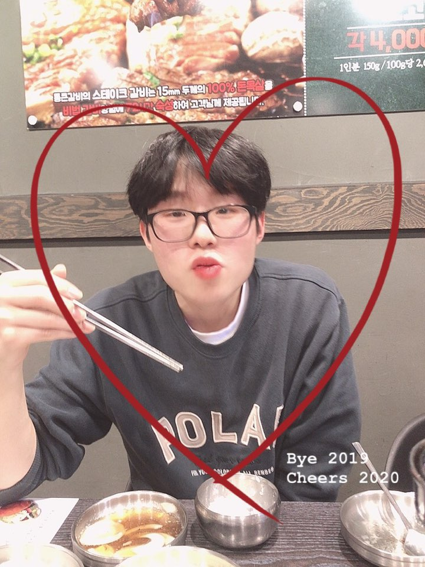

코로나 때문에 학교에서 놀았다ㅠㅠ
학교 도서관 가서 책도 읽고!!
물론 다혀니는 좀 읽다가 졸았지만...ㅋㅋㅋㅋㅋㅋ
그리고 다혀니 인생 처음으로 눈썹도 그려봤다!!ㅋㅋㅋㅋ
그린 거랑 안그린 거랑 차이가 많이 나서 놀랐다 크크
그리고 배달도 시켜 먹었지!! 점심엔 치킨 저녁엔 족발~~~
평소에 배달을 거의 안시켜 먹었는데 오랜만에 배달음식 먹어서 맛있었다!!
저 땐 코로나가 이렇게 심각해질 줄 몰랐는데.. 언눙 끝났으면 좋겠다ㅠㅠ

우리의 첫 드라이브~~~~
유지니가 내가 운전하는 차 타고 싶다그래서
열심히 연습해서 팔당으로 첫 드라이브를 갔다!!
옆에 유지니가 타고 있어서 혼자 운전하는 것보다 긴장됐지만
그래도 나름 운전 잘한 거 같아 그치???ㅋㅋㅋㅋㅋ
한강이 잘보이는 스벅에 가서 경치 구경도 하고 두물머리라는 곳도 갔다!!
두물머리 가자마자 건강을 체크하는 나무가 있어서 체험도 했지
우리 둘 다 홀쭉은 실패^^ㅋㅋㅋㅋㅋㅋ 유지니는 통통이었어야 했는데ㅠㅠ
유지니가 내가 운전하는 차 타고 싶다그래서
열심히 연습해서 팔당으로 첫 드라이브를 갔다!!
옆에 유지니가 타고 있어서 혼자 운전하는 것보다 긴장됐지만
그래도 나름 운전 잘한 거 같아 그치???ㅋㅋㅋㅋㅋ
한강이 잘보이는 스벅에 가서 경치 구경도 하고 두물머리라는 곳도 갔다!!
두물머리 가자마자 건강을 체크하는 나무가 있어서 체험도 했지
우리 둘 다 홀쭉은 실패^^ㅋㅋㅋㅋㅋㅋ 유지니는 통통이었어야 했는데ㅠㅠ
 

그리고 본격적인 두물머리 구경 시작!!
경치 좋은 곳에서 사진 많이 찍었다! 근데 날씨가 좀 흐려서 아쉬웠어ㅠㅠ
그래두 유지니랑 이런 데 오니까 기분이 완전 좋았다><
그리고 북한강이랑 남한강이랑 만나는 두물머리로 가서 밴치에 앉아있었다
두 강이 만나는 곳이어서 신기했어 ㅋㅋㅋㅋ
옛날 기차역도 갔지!!(이름은 잘 기억이 안남..ㅎㅎ) 저기도 분위기 좋았다 헤헤
날씨도 흐리고 노을도 안보이고 연꽃도 없어서 아쉬웠지만
유지니랑 첫 드라이브도 하고 즐거운 추억 많이많이 만들어서 행복한 날이었다!!!
경치 좋은 곳에서 사진 많이 찍었다! 근데 날씨가 좀 흐려서 아쉬웠어ㅠㅠ
그래두 유지니랑 이런 데 오니까 기분이 완전 좋았다><
그리고 북한강이랑 남한강이랑 만나는 두물머리로 가서 밴치에 앉아있었다
두 강이 만나는 곳이어서 신기했어 ㅋㅋㅋㅋ
옛날 기차역도 갔지!!(이름은 잘 기억이 안남..ㅎㅎ) 저기도 분위기 좋았다 헤헤
날씨도 흐리고 노을도 안보이고 연꽃도 없어서 아쉬웠지만
유지니랑 첫 드라이브도 하고 즐거운 추억 많이많이 만들어서 행복한 날이었다!!!

이 날은 영화가 너무 보고 싶어서 정직한 후보를 봤다!
작은 아씨들도 보고 싶어서 많이 고민했지만 정직한 후보 재밌었음 ㅎㅎ
영화 보기 전에 스벅에서 신메뉴를 시켜봤는데 나한텐 너무 달았어..ㅋㅋㅋ
영화 끝나고는 통큰 갈비 가서 배부르게 고기를 먹었지!! 유지니 고기 잘구워><
작은 아씨들도 보고 싶어서 많이 고민했지만 정직한 후보 재밌었음 ㅎㅎ
영화 보기 전에 스벅에서 신메뉴를 시켜봤는데 나한텐 너무 달았어..ㅋㅋㅋ
영화 끝나고는 통큰 갈비 가서 배부르게 고기를 먹었지!! 유지니 고기 잘구워><